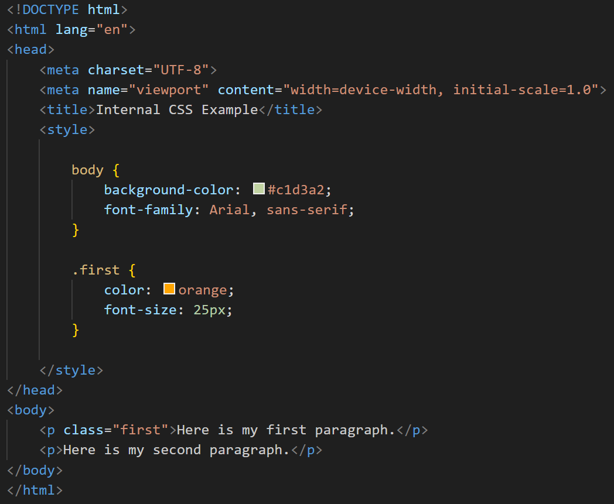
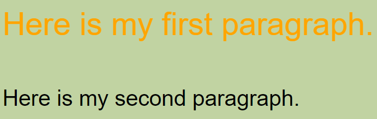

About Internal CSS
This webpage utilizes only Internal CSS in order to achieve its current look.
Internal CSS is a method for defining CSS styles directly within an HTML document.
It’s particularly useful for applying unique styles to a single web page, and it’s embedded within the 'style' element located in the 'head' section of the HTML file.
To use internal CSS, you need to include CSS rules within a 'style' tag inside the HTML document’s 'head'.
This allows you to define styles by selecting HTML elements or classes and applying styling rules within the tag.
The styles defined by internal CSS apply only to the specific web page where they are included.
By understanding the strengths and limitations of internal CSS, you can make informed decisions about when and how to use it effectively in your web projects.
For further learning, consider exploring more detailed CSS tutorials and examples.

Figure 1: Sample Code for Internal CSS
Figure 2: Browser Output for Internal CSS
Use Cases
- Localized Styling – Keeps styles within the HTML file, avoiding conflicts with other pages and making it easier to manage styles at the local level.
- Higher Specificity – Internal CSS has higher specificity than external CSS, allowing easier overriding of external styles within the same HTML file.
- Performance – Reduces HTTP requests, potentially enhancing performance as no additional CSS files need to be loaded.
- Ease of Implementation – Simple to use and implement, making it easy to quickly apply styles to a single page.
Limitations
- Repetition – Styles must be repeated in multiple HTML files if the same styles are needed across different pages.
- Increased File Size – Embedding CSS in HTML increases the file size of the HTML document.
- Reduced Reusability – Limited code reusability across different web pages.
- Limited Management – Managing styles across multiple pages can become difficult without a centralized stylesheet.
Conclusion and References
Conclusion:
Internal CSS is an effective method for defining styles within an HTML document, providing a simple and efficient way to manage localized styling.
By embedding CSS rules within the 'style' tag located in the 'head' section, developers can achieve higher specificity and improved performance by reducing HTTP requests.
The ease of implementation makes it ideal for quickly applying styles to a single page, especially in scenarios where unique styling is required.
However, it is important to consider the limitations, such as repetition of styles across multiple pages, increased file size, and reduced code reusability.
By understanding these strengths and limitations, developers can make informed decisions on when and how to utilize Internal CSS effectively in their projects.
For further learning, exploring more detailed CSS tutorials and examples is recommended.
References:
GeeksforGeeks. (n.d.). Internal CSS. GeeksforGeeks. Retrieved October 13, 2024, from https://www.geeksforgeeks.org/internal-css/
TutorialsPoint. (n.d.). CSS tutorial. TutorialsPoint. Retrieved October 13, 2024, from https://www.tutorialspoint.com/css/index.htm
W3Schools. (n.d.). CSS how to. W3Schools. Retrieved October 13, 2024, from https://www.w3schools.com/css/css_howto.asp
Name: Zildjian E. California
Student ID: 2024-14086
Email: zcalifornia@up.edu.ph
Phone: +63 9460604514